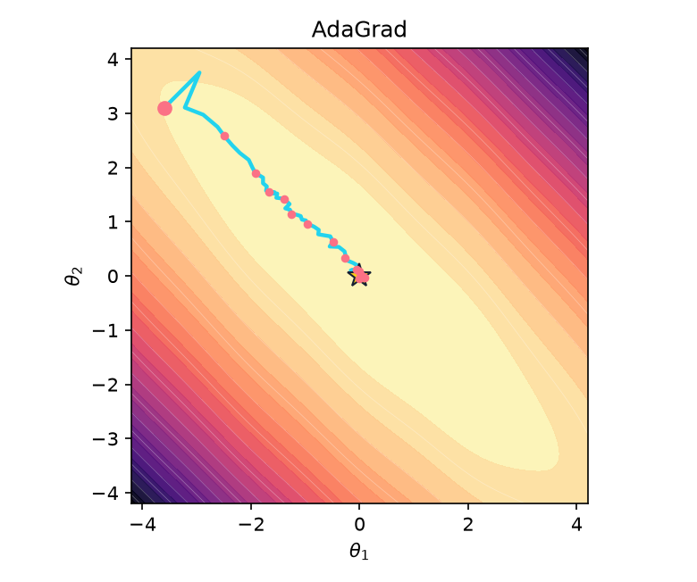

import numpy as np
import matplotlib.pyplot as plt
from matplotlib.animation import FuncAnimation
from IPython.display import HTML, display
np.set_printoptions(precision=4, suppress=True)
SEED = 17Optimizers from Scratch: The Descent Race
One session · NumPy · optimizer updates · animated 2D trajectories
You will implement only the optimizer. The loss landscape, gradient sampling, experiment runner, checks, plots, and animations are provided. After each update rule passes its check, watch it move on exactly the same two-dimensional problem.
By the end, every optimizer will start at the same point and receive the same update budget in one final race.
0 — The supplied laboratory
Our objective is a narrow ravine with a gentle ripple. A finite collection of per-example linear terms averages to zero, so the full gradient follows the displayed loss while individual examples give noisy but unbiased directions.
Do not edit this section. It is the measuring instrument for your optimizer implementations.
class Landscape:
def __init__(self, n_samples=64, seed=SEED):
self.A = np.array([[1.4, 1.25], [1.25, 1.4]])
rng = np.random.default_rng(seed)
self.offsets = rng.normal(size=(n_samples, 2)) @ np.array([[0.48, 0.0], [0.0, 0.16]])
self.offsets -= self.offsets.mean(axis=0, keepdims=True)
self.n_samples = n_samples
def value(self, theta):
x, y = np.asarray(theta, dtype=float)
return 0.5 * np.array([x, y]) @ self.A @ np.array([x, y]) + 0.08 * (1 - np.cos(3*x))
def grad(self, theta, indices=None):
theta = np.asarray(theta, dtype=float)
noise = self.offsets.mean(axis=0) if indices is None else self.offsets[np.atleast_1d(indices)].mean(axis=0)
ripple = np.array([0.24 * np.sin(3 * theta[0]), 0.0])
return self.A @ theta + ripple + noise
landscape = Landscape()
START = np.array([-3.6, 3.1])
def batch_stream(steps, batch_size, seed=SEED):
if batch_size is None or batch_size >= landscape.n_samples:
return [None] * steps
rng = np.random.default_rng(seed)
return [rng.choice(landscape.n_samples, size=batch_size, replace=False) for _ in range(steps)]
def run(optimizer, steps=80, batch_size=None, seed=SEED):
theta = START.astype(float).copy()
optimizer.reset(theta.shape)
path = [theta.copy()]
losses = [landscape.value(theta)]
for indices in batch_stream(steps, batch_size, seed):
query = optimizer.query(theta)
gradient = landscape.grad(query, indices)
theta = optimizer.step(theta, gradient)
path.append(theta.copy())
losses.append(landscape.value(theta))
if not np.all(np.isfinite(theta)) or np.linalg.norm(theta) > 50:
break
return np.asarray(path), np.asarray(losses)
def draw_background(ax):
axis = np.linspace(-4.2, 4.2, 240)
X, Y = np.meshgrid(axis, axis)
Z = 0.5*(landscape.A[0,0]*X**2 + 2*landscape.A[0,1]*X*Y + landscape.A[1,1]*Y**2) + 0.08*(1-np.cos(3*X))
ax.contourf(X, Y, Z, levels=28, cmap="magma_r", alpha=.94)
ax.contour(X, Y, Z, levels=18, colors="white", linewidths=.35, alpha=.38)
ax.plot(0, 0, marker="*", color="#facc15", ms=14, mec="#172033")
ax.set(xlim=(-4.2, 4.2), ylim=(-4.2, 4.2), xlabel=r"$\theta_1$", ylabel=r"$\theta_2$")
ax.set_aspect("equal")
def animate_path(path, label, interval=70):
fig, ax = plt.subplots(figsize=(6.4, 5.4))
draw_background(ax)
line, = ax.plot([], [], color="#22d3ee", lw=2.2)
point, = ax.plot([], [], "o", color="#fb7185", ms=8)
status = ax.text(.03, .96, "", transform=ax.transAxes, va="top", color="white", weight="bold")
def update(frame):
shown = path[:frame+1]
line.set_data(shown[:, 0], shown[:, 1])
point.set_data([shown[-1, 0]], [shown[-1, 1]])
status.set_text(f"{label} · step {frame:02d} · loss {landscape.value(shown[-1]):.4f}")
return line, point, status
animation = FuncAnimation(fig, update, frames=len(path), interval=interval, blit=True)
plt.close(fig)
return HTML(animation.to_jshtml())
class Optimizer:
def reset(self, shape):
pass
def query(self, theta):
return thetafig, ax = plt.subplots(figsize=(6.4, 5.4))
draw_background(ax)
ax.plot(*START, "o", color="#fb7185", ms=9)
ax.set_title("One objective, one initial point")
plt.show()1 — One gradient rule, three data regimes
Implement the memoryless update
\[\theta_{t+1}=\theta_t-\eta g_t.\]
The formula does not tell us how \(g_t\) was estimated. The supplied runner controls that separately:
batch_size=None: full-batch gradient descent;batch_size=1: stochastic gradient descent (SGD);batch_size=8: minibatch gradient descent.
This separation matters: batch size changes the evidence; the optimizer changes how the evidence is used.
class GradientDescent(Optimizer):
def __init__(self, lr):
self.lr = lr
def step(self, theta, grad):
# TODO 1: return the next parameter vector. Do not modify theta in place.
raise NotImplementedError("TODO 1")def check_gradient_descent():
opt = GradientDescent(lr=0.1)
opt.reset((2,))
got = opt.step(np.array([1., -2.]), np.array([.5, -1.]))
np.testing.assert_allclose(got, [0.95, -1.9])
print("✓ Gradient descent update passed")
check_gradient_descent()# Same update rule; only the gradient estimator changes.
for name, size in [("Full batch", None), ("SGD", 1), ("Minibatch", 8)]:
path, _ = run(GradientDescent(lr=0.18), steps=55, batch_size=size)
print(name)
display(animate_path(path, name))Stop and interpret
Before continuing, compare the three paths. Which is smoothest? Which is noisiest? Is a noisy step necessarily an incorrect step? Record one observation in a markdown cell.
2 — Momentum: remember a direction
Momentum stores a velocity with the same shape as the parameters:
\[v_{t+1}=\beta v_t+g_t,\qquad \theta_{t+1}=\theta_t-\eta v_{t+1}.\]
Implement both state initialization and the update. From this point onward, the demonstrations use the same fixed minibatch stream (batch_size=8).
class Momentum(Optimizer):
def __init__(self, lr, beta=0.9):
self.lr, self.beta = lr, beta
def reset(self, shape):
# TODO 2a: initialize velocity with zeros.
raise NotImplementedError("TODO 2a")
def step(self, theta, grad):
# TODO 2b: update velocity first, then parameters.
raise NotImplementedError("TODO 2b")def check_momentum():
opt = Momentum(lr=.1, beta=.5)
opt.reset((2,))
t = opt.step(np.array([1., 1.]), np.array([2., -1.]))
np.testing.assert_allclose(opt.v, [2., -1.])
np.testing.assert_allclose(t, [.8, 1.1])
t = opt.step(t, np.array([0., 1.]))
np.testing.assert_allclose(opt.v, [1., .5])
np.testing.assert_allclose(t, [.7, 1.05])
print("✓ Momentum state and update passed")
check_momentum()path, _ = run(Momentum(lr=.075, beta=.9), steps=55, batch_size=8)
display(animate_path(path, "Momentum"))3 — Nesterov: measure after looking ahead
Nesterov momentum asks for the gradient at a provisional point. The runner already calls query(theta) before it requests a gradient, so you implement only the look-ahead location and the familiar velocity update.
class Nesterov(Momentum):
def query(self, theta):
# TODO 3: return the look-ahead point theta - lr * beta * v.
raise NotImplementedError("TODO 3")def check_nesterov():
opt = Nesterov(lr=.2, beta=.75)
opt.reset((2,))
opt.v = np.array([2., -4.])
np.testing.assert_allclose(opt.query(np.array([1., 1.])), [.7, 1.6])
print("✓ Nesterov look-ahead passed")
check_nesterov()path, _ = run(Nesterov(lr=.075, beta=.9), steps=55, batch_size=8)
display(animate_path(path, "Nesterov"))4 — AdaGrad: accumulate coordinate-wise scale
AdaGrad stores the sum of squared gradients. Every operation below is element-wise:
\[s_t=s_{t-1}+g_t\odot g_t,\qquad \theta_{t+1}=\theta_t-\frac{\eta}{\sqrt{s_t}+\varepsilon}\odot g_t.\]
class AdaGrad(Optimizer):
def __init__(self, lr, eps=1e-8):
self.lr, self.eps = lr, eps
def reset(self, shape):
# TODO 4a: initialize the squared-gradient accumulator.
raise NotImplementedError("TODO 4a")
def step(self, theta, grad):
# TODO 4b: accumulate squared gradients and scale this update.
raise NotImplementedError("TODO 4b")def check_adagrad():
opt = AdaGrad(lr=.2, eps=0.)
opt.reset((2,))
t = opt.step(np.array([1., 1.]), np.array([2., -4.]))
np.testing.assert_allclose(opt.s, [4., 16.])
np.testing.assert_allclose(t, [.8, 1.2])
print("✓ AdaGrad accumulator and update passed")
check_adagrad()path, _ = run(AdaGrad(lr=.65), steps=55, batch_size=8)
display(animate_path(path, "AdaGrad"))5 — RMSProp: let old scale evidence fade
RMSProp replaces AdaGrad’s permanent sum with an exponential moving average:
\[s_t=\rho s_{t-1}+(1-\rho)g_t\odot g_t.\]
class RMSProp(Optimizer):
def __init__(self, lr, rho=.9, eps=1e-8):
self.lr, self.rho, self.eps = lr, rho, eps
def reset(self, shape):
# TODO 5a: initialize the scale memory.
raise NotImplementedError("TODO 5a")
def step(self, theta, grad):
# TODO 5b: update the moving average and take a scaled step.
raise NotImplementedError("TODO 5b")def check_rmsprop():
opt = RMSProp(lr=.1, rho=.75, eps=0.)
opt.reset((2,))
t = opt.step(np.array([1., 1.]), np.array([2., -4.]))
np.testing.assert_allclose(opt.s, [1., 4.])
np.testing.assert_allclose(t, [.8, 1.2])
print("✓ RMSProp scale memory and update passed")
check_rmsprop()path, _ = run(RMSProp(lr=.09, rho=.9), steps=55, batch_size=8)
display(animate_path(path, "RMSProp"))6 — Adam: direction memory plus scale memory
Adam combines a first moment \(m_t\), a second moment \(v_t\), and bias correction. Increment t before computing the corrected moments.
\[m_t=\beta_1m_{t-1}+(1-\beta_1)g_t,\] \[v_t=\beta_2v_{t-1}+(1-\beta_2)g_t\odot g_t,\] \[\hat m_t=\frac{m_t}{1-\beta_1^t},\qquad \hat v_t=\frac{v_t}{1-\beta_2^t}.\]
class Adam(Optimizer):
def __init__(self, lr, beta1=.9, beta2=.999, eps=1e-8):
self.lr, self.beta1, self.beta2, self.eps = lr, beta1, beta2, eps
def reset(self, shape):
# TODO 6a: initialize m, v, and integer step counter t.
raise NotImplementedError("TODO 6a")
def step(self, theta, grad):
# TODO 6b: update moments, bias-correct them, and update theta.
raise NotImplementedError("TODO 6b")def check_adam():
opt = Adam(lr=.1, beta1=.5, beta2=.75, eps=0.)
opt.reset((2,))
t = opt.step(np.array([1., 1.]), np.array([2., -4.]))
assert opt.t == 1
np.testing.assert_allclose(opt.m, [1., -2.])
np.testing.assert_allclose(opt.v, [1., 4.])
np.testing.assert_allclose(t, [.9, 1.1])
print("✓ Adam moments, correction, and update passed")
check_adam()path, _ = run(Adam(lr=.12), steps=55, batch_size=8)
display(animate_path(path, "Adam"))7 — The optimizer race
This is a controlled comparison, not a universal ranking. Every method receives:
- the same landscape and initial point;
- the same 70-update budget;
- the same minibatch indices at every step;
- one stated learning-rate configuration.
The learning rates differ because the methods scale gradients differently. Run the race, then use the loss plot to distinguish early speed, stability, and final loss.
competitors = {
"GD / minibatch": GradientDescent(.18),
"Momentum": Momentum(.075, .9),
"Nesterov": Nesterov(.075, .9),
"AdaGrad": AdaGrad(.65),
"RMSProp": RMSProp(.09, .9),
"Adam": Adam(.12),
}
results = {
name: run(opt, steps=70, batch_size=8, seed=2026)
for name, opt in competitors.items()
}def animate_race(results, interval=75):
colors = ["#22d3ee", "#fb7185", "#a78bfa", "#facc15", "#34d399", "#f97316"]
fig, ax = plt.subplots(figsize=(7.2, 5.8))
draw_background(ax)
artists = {}
for (name, (path, _)), color in zip(results.items(), colors):
line, = ax.plot([], [], lw=2, color=color, label=name)
point, = ax.plot([], [], "o", color=color, ms=6)
artists[name] = (line, point)
ax.legend(loc="upper right", framealpha=.9, fontsize=8)
max_frames = max(len(path) for path, _ in results.values())
def update(frame):
changed = []
for name, (path, _) in results.items():
shown = path[:min(frame+1, len(path))]
line, point = artists[name]
line.set_data(shown[:, 0], shown[:, 1])
point.set_data([shown[-1, 0]], [shown[-1, 1]])
changed.extend([line, point])
return changed
animation = FuncAnimation(fig, update, frames=max_frames, interval=interval, blit=True)
plt.close(fig)
return HTML(animation.to_jshtml())
display(animate_race(results))fig, ax = plt.subplots(figsize=(8, 4.6))
for name, (_, losses) in results.items():
ax.plot(losses, label=f"{name} · final={losses[-1]:.4f}")
ax.set(xlabel="update", ylabel="full objective", yscale="log", title="Same evidence budget, different trajectories")
ax.grid(alpha=.2)
ax.legend(fontsize=8, ncol=2)
plt.show()Expected visual signatures
Your exact path can change if you alter a hyperparameter, but the supplied configuration should produce these characteristic trajectories:
| Gradient descent | Momentum | Nesterov |
|---|---|---|
| AdaGrad | RMSProp | Adam |
|---|---|---|
 |
8 — Exit ticket
Answer briefly:
- Why is SGD not a different state-memory mechanism from full-batch gradient descent?
- Which optimizer crossed the ravine most directly? Cite visible path evidence.
- Which optimizer reached the lowest loss under this configuration? Cite the loss curve.
- Why does this race not prove that one optimizer is best for every neural network?
- Change exactly one hyperparameter for one method. State your prediction first, rerun, and explain the result.
Restart the kernel and run all cells before submission. Every check must pass, every individual animation must display, and the final race must use the supplied common seed.